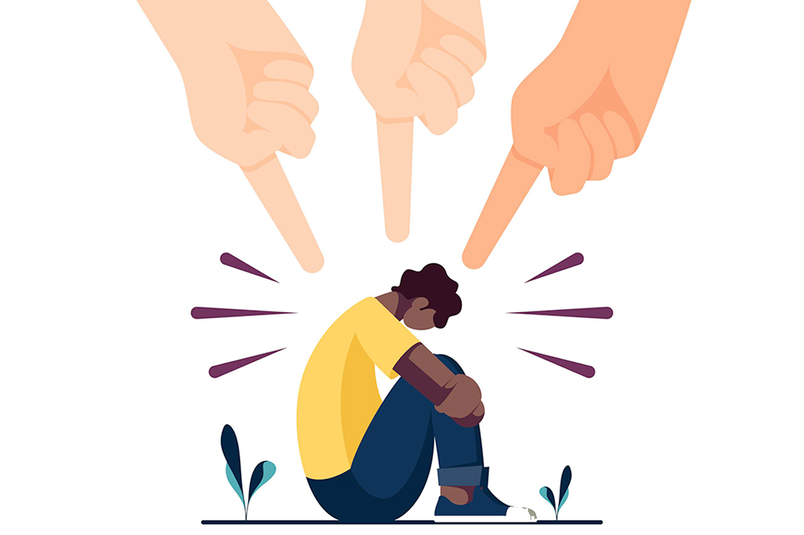

|  |
| INICIO / CONTACTO / LA DISCRIMINACION / CAUSAS / EFECTOS / TIPOS |
EFECTOSEsto tiene consecuencias graves y de gran alcance para su salud, su bienestar y sus derechos humanos. Entre ellas: la reducción de su calidad de vida; el incremento de su aislamiento social y su soledad; la restricción de su capacidad de expresar su sexualidad; y el aumento del riesgo de violencia y abuso contra ellas. Hace que la gente se sienta impotente, impide que se conviertan en ciudadanos activos y que participen en el desarrollo de sus habilidades y, en muchos casos, de acceder al trabajo, a los servicios de salud, educación o vivienda. Los efectos de la discriminación en la vida de las personas son negativos y tienen que ver con la pérdida de derechos y la desigualdad para acceder a ellos; lo cual puede orillar al aislamiento, a vivir violencia e incluso, en casos extremos, a perder la vida. Las victimas de Bullying se reflejan en el fracaso escolar, y los niveles altos de ansiedad y más concretamente la ansiedad anticipatoria, insatisfacción, fobia a ir al colegio, riesgos físicos, conformación de una personalidad insegura e insana. |
| TODOS LOS DERECHOS RESERVADOS © 2022 |